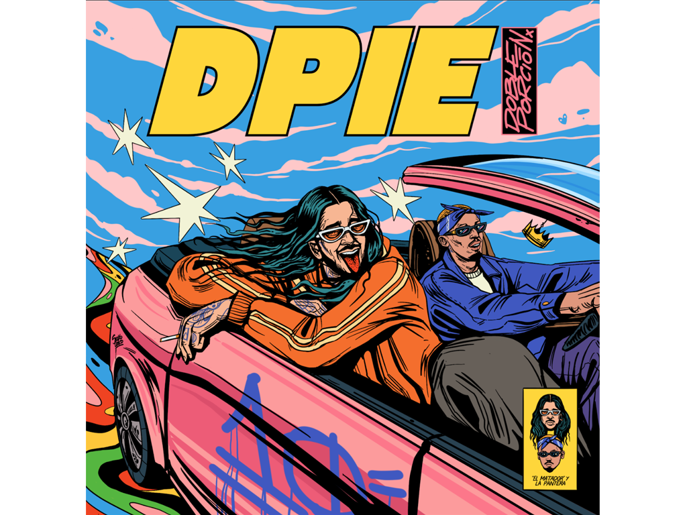

Blogs
The album dedicated to the music history from doble porción métricas frías and mañas Ru-Fino “De Por Vida”. “DPie” is the last track from the album “De Por Vida” from Doble Porción, released in December 2023. This is the 5th and last video and song, completing a saga that explores diversity in visual tools mixing perfect harmony and the magical style that Doble Porción has. The saga includes use of artificial inteligence in “Drama & Dinero”, VFX in “Serenata en La Montaña”, animation and illustration in “De Por Vida”, a video in reverse for “Como Perro”, and now a film style video for “DPie”, recorded with a 1970s camera.
Read more